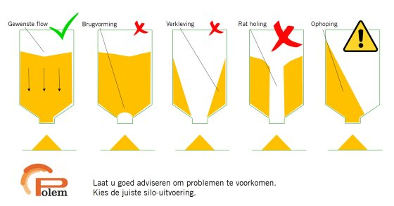

ontwerpen: Ontwikkelt een prototype van de oplossings(richting) Projectmanagement: draagt vanuit verschillende rollen bij aan het succes van een projectteam Onderzoeken: vertaalt eenpraktijkcasus naar een onderzoeksplan, voert deze uit en evalueert de kwaliteit van uitvoering overig( Communiceren: communiceert op effectieve wijze zijn bevindingen naar verschillende doelgroepen) Samenwerken: draagt actief bij aan een optimale werksfeer sfeer binnen en buiten zijn team Samenwerken: ontwikkelt een professioneel netwerk
Slim maken van een silo bij "Het Internethuis"
Om het raport in PDF te bekijken, klik hier Voor alle fotos en ideën van het project kun u op deze site vinden
5.1 Scores op basis van prijs
In onderstaande tabel staan de scores van de alternatieve oplossingen op basis van de geschatte kostprijs. In deze berekende kostprijs zitten de kosten van de te huren bouwmaterialen zoals hoogwerkers en kranen, de sensoren zelf en het extra benodigde materiaal voor het werkend krijgen van de sensor. Deze kosten zijn echter exclusief de arbeid die nodig is voor het installeren en afstellen van de sensor. Het alternatief met de laagste prijs heeft als score een 10 ontvangen. Op basis van dit gegeven zijn de andere cijfers berekend. Voor de verdere uitgangspositie gaan wij echter uit van de positie van de sensor vergeleken met de andere oplossingen en niet van de prijs.
|
Alternatieve oplossingen |
Cijfer o.b.v. Prijs |
Positie Prijs |
|
Druksensor |
10,00 |
1 |
|
Staalspanningsmeter |
9,09 |
3 |
|
Vijzel rotaties meten |
8,18 |
2 |
|
Capacitieve sensor |
7,27 |
4 |
|
Akoestisch meten |
6,36 |
5 |
|
Luchtdruk meting |
5,45 |
6 |
|
Compressie Sensor |
4,55 |
7 |
|
Radarsensor |
3,64 |
8 |
|
Lange druksensor |
2,73 |
9 |
|
Laser Sensor |
1,82 |
10 |
|
Trilvork |
0,91 |
11 |
5.2 Scores op basis Programma van Eisen en Wensen
Op basis van het geprioriteert programma van Eisen en Wensen te vinden in hoofdstuk 3 van dit verslag zijn de alternatieve oplossingen beoordeelt. Doordat de eisen waren geprioriteerd in Must, Should, Could en Would eisen is het mogelijk om scores te geven aan deze eisen. Per eis wordt er een cijfer gegeven van 1-10 over in hoeverre de alternatieve oplossing aan deze eis voldoet. Als een eis dan als Must geprioriteerd is telt deze eis vier keer mee. Als een eis als Should geprioriteerd is telt deze eis drie keer mee en zo verder.
|
Alternatieve Oplossingen |
Cijfer o.b.v. punten PvEW |
Positie PvEW |
|
Druksensor |
7,27 |
9 |
|
Staalspanningsmeter |
9,34 |
1 |
|
Vijzel rotaties meten |
6,73 |
10 |
|
Capacitieve sensor |
7,30 |
8 |
|
Akoestisch meten |
8,61 |
4 |
|
Luchtdruk meting |
8,86 |
3 |
|
Compressie Sensor |
9,07 |
2 |
|
Radarsensor |
8,34 |
6 |
|
Lange druksensor |
8,50 |
5 |
|
Laser Sensor |
7,59 |
7 |
|
Trilvork |
6,66 |
11 |
5.3 Nadelen en voordelen van de oplossingen
Hieronder zal per alternatieve oplossing beknopt worden toegelicht welke voordelen en welke nadelen de alternatieve oplossing heeft.
In onderstaande paragrafen zal worden toegelicht welke oplossingen mogelijk zijn voor de problemen en knelpunten in de huidige situatie.
4.1 Druksensor
Een druksensor meet of er wel of geen contact is. Door een dergelijke sensor aan de binnenkant van de silo te plaatsen kan gemeten worden op welke plek er wel of geen contact meer is met het voer. Door de sensor aan de binnenkant van de silo te plaatsen kan er gemeten worden of er op een bepaald niveau nog voer aanwezig is.
Geschatte prijs (exclusief arbeid voor het plaatsen van de sensor en het gebruiken van microcontrollers maar inclusief het huren van bouwmaterialen zoals hoogwerkers en kranen en het gebruik van overig materiaal*): €4,37 per stuk
4.2 Staalspanningsmeter
Een staalspanningsmeter kan meten of er druk op een stalen constructie staat. Onder de silo zit een stalen constructie waar spanning op komt te staan. Als er meer gewicht in de silo zit komt er meer spanning op de stalen constructie te staan onder de silo. Doormiddel van strain gauges kan de spanning op de stalen constructie gemeten worden en de spanning kan daarna teruggerekend worden naar kilo’s. Hiervoor zijn drie zogeheten strain gauges nodig. Één strain gauge zal namelijk de afwijking van de staalstress door de temperatuur meten die uit de berekening gerekend moet worden.
Geschatte prijs*: €6,78 per stuk
4.3 Vijzel rotaties meten
Onderaan de silo zit een vijzel. Deze vijzel transporteert het voer van de silo naar het vee van de veehouder. De vijzel draait rond om het voer te transporteren. Door de rotaties van de vijzel te meten doormiddel van een capacitieve sensor en het getransporteerde voer per rotatie te berekenen kan het verbruik van het voer berekend worden.
Geschatte prijs*: €8,18 per stuk
4.4 Capacitieve sensor
Een capacitieve sensor kan net als een druksensor meten of er wel of geen voer zit in de silo op een bepaalde positie. Echter kan de capacitieve sensor door een silo heen kijken. En kan deze sensor aan de buitenkant van de silo worden geplaatst.
Geschatte prijs*: €11,- per stuk
4.5 Akoestisch meten
In de huidige situatie slaat een veehouder op de zijkant van de silo om te horen hoe vol een silo zit met voer. Door een kleine mechanische constructie te maken die op bevel van de veehouder tegen de silo slaat kan doormiddel van de geluid/tril frequentie gehoord worden hoe vol een silo zit.
Geschatte prijs*: €88,49 per stuk
4.6 Luchtdruk meting
Een silo heeft aan de zijkanten twee pijpen lopen. De ene pijp is voor het spuiten van veevoer in de silo de andere pijp is om de luchtdruk die tijdens het inspuiten van het voer wordt gebruikt weg te lijden. Door deze twee pijpen luchtdicht af te sluiten en hier doormiddel van een compressor een lichte druk op te zetten kan doormiddel van het meten van de luchtdruk het volume van het voer bepaald worden.
Geschatte prijs*: €116,38
4.7 Compressie sensor
Een compressie sensor kan de zwaarte van een silo meten. Door vier compressie sensoren te leggen onder de stalen constructie van de silo kan gemeten worden hoeveel kilogram de silo weegt.
Geschatte prijs*: €121,20
4.8 Radar sensor
Een radarsensor kan bovenop de silo geplaatst worden om te meten hoeveel volume voer er nog in de silo zit. De radarsensor maakt gebruik van microwave golven. Door het weerkaatsen van deze golven die de sensor vanaf boven verstuurd weet de sensor op welke hoogte het voer ongeveer zit.
Geschatte prijs*: €148,76
4.9 Lange druksensor
De eerder genoemde druksensor is ook verkrijgbaar in een slinger. Deze slinger kan de druk meten over de gehele lengte van de sensor. Deze sensor kan over de gehele hoogte aan de binnenkant van de silo worden geplaatst. Hierdoor kan de sensor over de gehele hoogte meten hoeveel druk er op de sensor staat.
Geschatte prijs*: 157,25
4.10 Laser sensor
Een laser sensor stuurt vanaf de bovenkant van de silo een laser af die weerkaatst op het voer. Door de weerkaatsing kan er met gebruik van deze sensor gemeten worden op welke positie het voer zich bevindt in de silo.
Geschatte prijs*: €178,01
4.11 Trilvork
Trilvorksensoren hebben een trilvork. De trilvork wordt doormiddel van een knop van de veehouder geactiveerd en trilt op de resonantiefrequentie van ca. 1200 Hz. De
frequentie verandert wanneer de trilvork wordt bedekt met het voer. Deze verandering van de frequentie wordt gedetecteerd door de sensor en hierdoor kan gemeten worden of er op een bepaalde positie wel of geen voer zit. Deze trilvork dient doormiddel van een gat in de silo te worden gebracht.
Geschatte prijs*: €327,-
3.1. Specificaties
Het doel van het pakket van eisen is het benoemen van de eisen voor het project. Er is gebruikt gemaakt van de MoSCoW-methode (zie Moscow Wikipedia). In de tabel staat een omschrijving van de afkortingen die zijn toegepast voor MoSCoW. Het pakket van eisen wordt gebruikt als naslagwerk om te controleren of er voldaan is aan de eisen.
|
Prioriteit |
Afkorting |
Betekenis |
Omschrijving |
|
Must |
M |
Must have |
Eisen waaraan voldaan moet worden. |
|
Should |
S |
Should have |
Vereisten waaraan voldaan moet worden indien mogelijk. |
|
Could |
C |
Could have |
Gewenste eis maar geen verplichting. |
|
Would |
W |
Would have |
Een eisen waar niet aan voldaan gaat worden, bij vervolg project wel interessant. |
3.1.1. Functionele specificaties
Algemeen
|
Eis |
Omschrijving |
MoSCoW |
|
1.1.01 |
Het prototype wordt gerealiseerd doormiddel van microcontroller |
Could |
|
1.1.02 |
Engels commentaar bij code, objecten en tags. |
Must |
|
1.1.03 |
Naam ontwerpers en versie van de software vermeld. |
Must |
|
1.1.04 |
IO-Lijst beschikbaar. |
Must |
|
1.1.05 |
Er wordt geprogrammeerd in ‘structured text’ |
Could |
|
1.1.06 |
Prototype moet gemakkelijk plaatsbaar zijn |
Must |
|
1.1.07 |
De verbinding met het internet gaat via het LORA netwerk. |
Must |
|
1.1.08 |
Prototype moet gemakkelijk instelbaar zijn |
Should |
|
1.1.09 |
Herkenning van brugvorming, verkleving, rat holing of ophoping ontstaat. |
Would |
|
1.1.10 |
Silo hoeft niet aangepast te worden. |
Should |
Werking
|
Eis |
Omschrijving |
MoSCoW |
|
1.2.01 |
Prototype kan de inhoud van de silo meten |
Must |
|
1.2.02 |
Prototype kan voer verbruik realtime meten |
Could |
|
1.2.03 |
Sensor blijft functioneren in de bijbehorende situatie |
Must |
|
1.2.04 |
Meting betrouwbaar indien brugvorming, verkleving, rat holing of ophoping ontstaat. |
Must |
Visualisatie
|
Eis |
Omschrijving |
MoSCoW |
|
1.3.01 |
Alarm parameters zijn instelbaar via het HMI. |
Must |
|
1.3.02 |
Inhoud van de silo afleesbaar |
Should |
Alarmen
|
Eis |
Omschrijving |
MoSCoW |
|
1.4.01 |
Alarm indien de silo bijna leeg is. |
Must |
|
1.4.02 |
Notificatie indien brugvorming, verkleving, rat holing of ophoping ontstaat. |
Would |
2.1. De huidige situatie
2.1.1. Het bestellen van nieuwe voorraad door de veehouder
Op dit moment besteld de veehouder zijn voorraad wanneer hij denkt dat de voorraad bijna op is. Door de ervaring die hij in het verleden heeft opgedaan weet hij wanneer hij ongeveer nieuwe voorraad moet bestellen. Ook kan hij ongeveer zien hoeveel voorraad er in de silo zit als de zon er op de juiste plek op staat.
Als de veehouder besluit om te bestellen neemt hij contact op met de veevoederleverancier. De veehouder kiest het soort voer wat hij wil, in welke silo het voer moet komen en de hoeveelheid die hij wil hebben. De veevoederleverancier begint pas met het produceren van het voer als de veehouder heeft besteld. De veevoeder weet op basis van historie wel welke grondstoffen zij wanneer ongeveer nodig zal gaan hebben per dag.
De veevoederleverancier heeft vaak een levertijd van één werkdag (maandag tot en met zaterdagochtend zijn de werkdagen). De boer heeft echter ook de mogelijkheid om een spoedbestelling aan te vragen. Bij een spoedbestelling wordt dezelfde dag nog bezorgd als dit mogelijk is.
Het voer wordt bezorgd doormiddel van een vrachtwagen. Deze vrachtwagens hebben verschillende kleppen waarbij de verschillende soorten voer in verschillende compartimenten worden bewaard. Vaak kan het ene voer alleen na het andere voer worden geleverd doordat de soorten niet met elkaar in contact mogen komen omdat er in sommige soorten voer vlees zit en in andere soorten er echt geen vlees mag komen te zitten.
De vrachtwagen levert het voer vervolgens af bij de veehouder. De vrachtwagenchauffeur spuit het voer doormiddel van druk via een buis de silo in. Vaak is de veehouder niet aanwezig bij de levering van het voer en laat de vrachtwagenchauffeur de pakbon achter op de locatie van levering. Nadat het voer is geleverd ontvangt de veehouder de factuur over de levering.
2.1.2 Het meten van het verbruik door de veehouder
De veehouder meet op dit moment het verbruik van het voer door te kijken naar een gemiddelde verbruik wanneer de silo leeg is. Hij kan daardoor gemiddeld zien hoeveel voer er is gebruikt in een bepaalde periode. Dit is belangrijk omdat de veehouder hierdoor de voerconversie kan berekenen. De voerconversie is de hoeveelheid voer die de veehouder verbruikt voor een kilo vlees. De voerconversie van de verschillende soorten voer zijn bekend als een gemiddelde voerconversie van een gemiddeld varken bij de veevoederleveranciers. Deze informatie kan de veehouder ophalen en vergelijken met zijn eigen voerconversie. Gemiddeld per varken heeft hij dan achteraf een beeld van de voerconversie en daarmee dus informatie of de organisatie de juiste kant op gaat. Het beeld is achteraf omdat de veehouder de precieze kilo’s van het vee krijgt als deze naar de slacht gaan.
2.2. Knelpunten en problemen in de huidige situatie
staat beknopt welke problemen en knelpunten er zijn in de huidige situatie:
2.2.1 Het bestellen van nieuwe voorraad door de veehouder
• De veehouder weet niet precies wanneer de silo leeg gaat zijn. Door onder andere te kijken naar de hoeveelheid voorraad als de zon er op staat en doormiddel van zijn ervaring weet hij ongeveer wanneer hij nieuwe voorraad moet bestellen. Echter stroomt een silo niet evenredig leeg. Het komt namelijk voor dat een silo op een van de volgende manier leeg stroomt:
Doordat de veehouder tegen de zijkant van de silo aan kijkt krijgt de veehouder geen juist beeld van de werkelijke aanwezige voorraad;

• De veehouder moet zelf bellen voor een bestelling. Dit kost de veehouder tijd en hierdoor is hij minder bezig met het primaire proces van de veehouderij;
• Het is mogelijk in de huidige situatie dat de veehouder zonder voer zit.
• De logistieke planning van de veevoederleverancier kan pas dezelfde dag of een etmaal van tevoren gemaakt worden. Hierdoor is de logistieke planning vaak niet optimaal;
• Vrachtwagens vervoeren verschillend voer waardoor er een bepaalde volgorde van levering is. Dit beperkt de mogelijkheden van de logistieke planning.
2.2.2 Het meten van het verbruik door de veehouder
• De voerconversie is een gemiddelde van het totale verbruik door het vee en niet specifiek per dier;
• De voerconversie wordt achteraf pas duidelijk.
1.1. Aanleiding
Voor de interne controle en sturing voor veehouderijen is het van belang dat de informatie, die veehouders hebben over hun veehouderij, juist zijn en tijdig worden aangeleverd. Op dit moment zijn de informatiestromen bij deze organisaties niet juist ingericht en wordt de informatie pas geleverd. De veehouder heeft hierdoor geen goed beeld van zijn/haar organisatie en kan daardoor de organisatie lastig sturen en beheersen.
Ook de voerleveranciers hebben op dit moment geen informatie over de voervoorraden van de veehouderijen. Hierdoor kunnen de voerleveranciers pas een logistieke planning maken als een veehouder voer besteld. Door de informatie eerder te ontvangen kunnen zij een logistieke planning maken met kortere reistijden en minder personeel.
1.2. Organisatie
Het internethuis is gevestigd in Doetinchem en het bedrijf richt zich op Internet of Things (IOT) en 4G oplossingen. Denk hierbij aan sensoren die geplaatst worden op een hooizolder om de temperatuur in de gaten te houden. Het bedrijf heeft 20 werknemers en heeft geen vaste werktijden, waardoor de werknemers voornamelijk thuis of op locatie bij een opdrachtgever werken.
1.3. Doelstelling
De doelstelling voor dit onderzoek is om een meetsysteem te ontwikkelen waardoor veehouders kunnen zien hoeveel voer zij op dat moment in voorraad hebben. Ook dient dit meetsysteem zichtbaar te zijn voor de voerleveranciers zodat zij hun logistieke planning op de voorraad voer van de veehouders kan afstemmen.
1.4. Scope
Bij dit onderzoek wordt er vooral gekeken naar veehouderijen die varkens houden. De voorraad bij deze veehouders zit veelal in silo’s. In dit onderzoek zal dan ook alleen gekeken worden naar het voer wat in de silo’s bij de veehouderijen staat.
1.5. Stakeholders
1.5.1. Veehouderijen
Veehouderijen zijn bedrijven die doormiddel van vee, producten produceren die zij verkopen. De veehouders zouden graag op een eenvoudige manier juiste informatie willen ontvangen voor hun organisatie.
1.5.2. Voerleveranciers
Het leveren van het voer gebeurt nu zodra een veehouder belt en de hoeveelheid voer doorgeeft. De voerleveranciers hebben er baat bij als zij tijdig weten welke veehouders in de toekomst voer nodig hebben. Door tijdig te weten welke boeren voer nodig hebben kan er een logistieke planning worden gemaakt waarbij minder kilometers worden gemaakt wat daardoor voordeliger is voor de voerleveranciers.
1.5.3. Het internethuis
Het Internethuis is een organisatie die projecten uitvoert voor opdrachtgevers. Dit onderzoek is een onderdeel van een groot project om zoveel mogelijk data in één visualisatie programma te weergeven voor veehouderijen, een ERP-systeem. Indien de uitkomst van dit onderzoek een goede oplossing biedt voor de opdrachtgevers van deze opdracht kan Het Internethuis deze informatie gebruiken bij de overige onderdelen van dit project.
1.6. Projectresultaat
1.6.1. Probleemstelling
De veehouderijen kunnen op dit moment niet bepalen hoeveel voorraad voer er in een silo zit. Hierdoor wordt er veel op het laatste moment besteld door de veehouders, waardoor de voerleveranciers de logistieke planning niet optimaal kunnen vormgeven. Ook zorgt dit probleem ervoor dat de veehouderijen niet tijdig de juiste informatie ontvangen over hun voorraden en daardoor de organisatie niet op basis van de juiste voorraadinformatie kunnen besturen.
Rapport
In dit rapport dient het onderzoek beschreven te worden die is gedaan om de onderzoeksvraag te beantwoorden. De conclusies van dit rapport zullen bestaan uit aanbevelingen voor de opdrachtgever.
Prototype
Doormiddel van een werkend prototype dient de voorraadinformatie real-time te worden vastgelegd. Hiernaast wordt de data weergegeven in een applicatie op de computer.
1.6.3. Hoofdvraag en Deelvragen
De hoofdvraag is:
"Welk systeem kan de voorraadinformatie van (varkens)veehouderijen real-time meten en hoe kan deze informatie aan zowel de veehouders als de leveranciers worden geleverd?”
De hoofdvraag dient te worden beantwoord doormiddel van de volgende deelvragen:
• Op welke manier is de huidige situatie ingericht?
• Wat zijn de knelpunten en problemen in de huidige situatie?
• Wat zijn de eisen en wensen van de belanghebbenden?
• Welke alternatieve oplossingen zijn er die de eisen, wensen, knelpunten en problemen kunnen oplossen?
1.6.4. Toegepaste theorie
Lean
Lean is een business strategie en vooral een manier van werken waarbij alles en iedereen in de onderneming zich richt op het creëren van waarde voor de klant in alle processen. Hiervoor worden de verspillingen geëlimineerd. Door de klant centraal te stellen creëer je maximaal toegevoegde waarde voor de klant tegen minimale inspanning. Hierdoor verbetert de kwaliteit, worden doorlooptijden verkort en worden de kosten verminderd (LeanSixSigma, z.d.). Doormiddel van deze theorie kan het proces rondom de voorraadinformatie op een juiste manier worden ingericht. Ook kan doormiddel van JIT, Just In Time Management het proces zodanig ingericht worden dat de voorraadkosten van de veehouder worden verminderd.
GAMP
GAMP is een richtlijn voor het ontwerpen en testen van industriële toepassingen. Onder andere het V-model (Figuur 1.6.5 1) maakt deel uit van GAMP, en zorgt ervoor dat alle stappen voor het ontwikkelen van een industriële toepassing correct worden afgehandeld. Door de V aan de linkerkant te starten en naar beneden toe te werken komen alle zaken langs die afgehandeld moeten worden, voordat met de implementatie begonnen wordt. De onderkant van de V staat voor het bouwen en het implementeren van de software en hardware. Daarna wordt langs de rechterzijde van de V weer omhoog gewerkt om elk onderdeel op de juiste manier te testen.
Het V-model is voornamelijk gebruikt om structuur aan te brengen in de ontwikkeling van de besturing. Hierdoor kan de besturing in de juiste volgorde ontwikkeld en getest worden.

1.7. Risico’s
Hier zijn de risico’s opgeschreven die tijdens het project kunnen optreden. Deze risico’s zijn opgesplitst in technische en management risico’s.
1.7.1. Technische inhoudelijke project risico’s
• Leveringsvertraging van componenten
Het is mogelijk dat de elektrocomponenten vertraging hebben, omdat deze uit China moeten komen.
Kans: klein
Gevolg: vertraging van het project
1.7.2. Projectmanagement risico’s
• Afwezigheid van de stagebegeleider
Het is mogelijk dat de stagebegeleider niet aanwezig kan zijn om diverse redenen.
Kans: middelmatig
Mogelijk gevolg: een collega vragen voor ondersteuning.
• Gebrek aan kennis
Het is mogelijk dat de stagiaires over niet genoeg of incorrecte kennis beschikt, doordat deze nog niet gewerkt heeft met de software of nog weinig kennis heeft van bedrijfsprocessen.
Kans: klein, er kan op veel manieren aan de juiste informatie worden gekomen. Doormiddel van, de begeleiders, docenten aan de HAN en andere informatiebronnen.
Mogelijke gevolgen: expert inhuren of cursus volgen